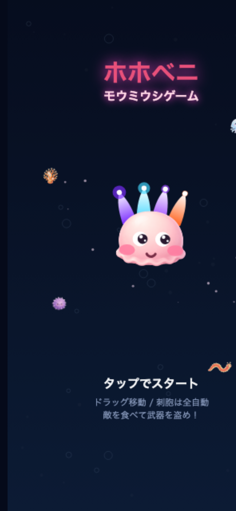
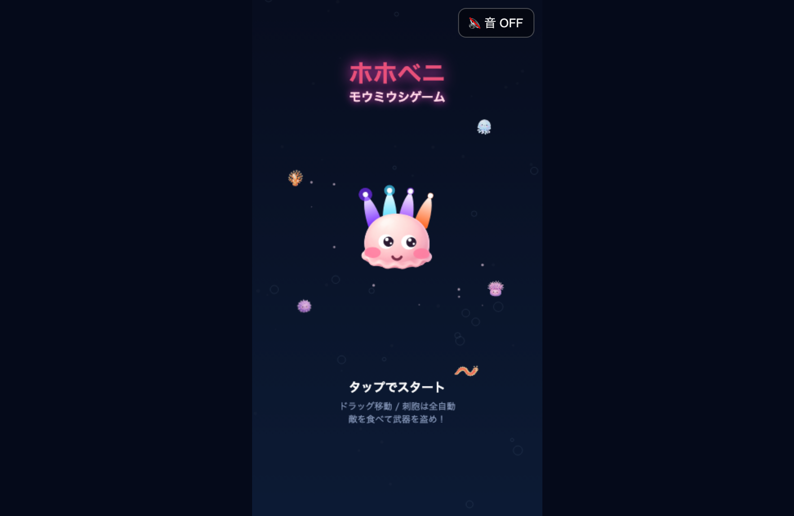

昨夜の AIカンパニー
2026-08-31 · 生成 2026-09-03 08:41:51 +0900
#1 · B · ok
ホホベニゲーム:コア1ウェーブのクリア条件を数値なしで文章化し、実装順序の先頭を1つに絞る
- `30-Projects/ホホベニゲーム.md` — コア1ウェーブのクリア条件を数値なしで3行に文章化し、実装順序チェックリストを既存コード（`code/hohobeni-game/index.html`、実装済み）の実態に合わせて更
30-Projects/ホホベニゲーム.mdcode/hohobeni-game/index.html10-Goals/goals.md


#2 · A · ok
Area更新: AWS資格
- `20-Areas/AWS資格.md` — 「高性能な設計（24%)」節に、これまで未カバーだった Domain 3.5（データ取り込み・変換：Kinesis/Firehose/Glue/Athena/MSK）の勉強メモを追記し、`up
> 上の「SAA 勉強メモ（セクション別）」は Domain 1〜4 の内容と対応済み。Domain 3.5（データ取り込み・変換：Kinesis/Glue/Athena等）は下の「高性能な設計」内に追記済み。
**データ取り込み・変換（Task 3.5）**
- **Kinesis Data Streams**: リアルタイムのストリーミングデータ取り込み。複数コンシューマーが並行で読める。
#3 · A · ok
Area更新: お酒
- `20-Areas/お酒.md` — ビール節に「エール vs ラガー（発酵方式）」比較メモを追記し、日本酒の生酛/速醸との共通点を補足。updated日付も更新。
**エール vs ラガー（発酵方式）のメモ**
- エール：上面発酵酵母（高め・常温近くの温度で数日〜1週間程度発酵）。フルーティーな香りや複雑な味わいが出やすい。IPA・スタウト・ヴァイツェンなど多様なスタイルの土台。
- ラガー：下面発酵酵母（低温でゆっくり数週間発酵）。スッキリ・クリアな味わいになりやすく、ピルスナーが代表格。19世紀以降、低温管理技術の発展とともに世界的に主流に。
#4 · A · ok
Area更新: コムローイ祭り
CAD 2026年は11/24・25両日開催（同一プログラム）で満月本夜は11/25と判明、ノートが選ぶ11/24はピーク回避で狙い通りと確認。チケット価格帯（VIP 6,500THB／Gold 8,900THB）も最新情報と一致し値上がり
- **2026-08-31 検証**: CAD Khomloy Sky Lantern Festival 2026は**11/24・25の両日開催が確定**（FaceTicket公式）。両日とも同一プログラム（13:00シャトル→18:30食事→20:15一斉放出）で前夜祭/本祭の区別なし。ただし**満月本夜（イーペン・ロイクラトン本来のピーク日）は11/25**なので、このノートが選んでいる**11/24はピーク日を避けた回**にあたる（狙い通り・変更不要）。チケット価格帯（VIP 6,480 THB／Gold 8,880 THB、通常価格はVIP 6,500／Gold 8,900）も**§5の記載と一致**、値上がりなし。
#5 · A · ok
Area更新: ブラウザ操作
- `20-Areas/ブラウザ操作.md` — B1b実験項目に「手順確定済み・実行はにゃみ待ち・夜枠キュー除外済み」の状態注記を追記し、`updated` を更新（コミット eff2c03）。
- [ ] B1b: ログイン済みタブで Googleスライドへ流し込みを1回成功させる（手順は[[提案資料工場-B1b-スライド流し込み手順]]に確定済み・実行はにゃみ待ち。Claude Code には実ブラウザの手足がなく代行不可。夜枠キューには載せない運用に変更済み）
#6 · A · ok
Area更新: 世界遺産
自然遺産節の空欄を埋め、ガラパゴス諸島の成因・固有種・海流・ダーウィンとの関係を追記（updated日付も更新）、コミット済み。
#### ガラパゴス諸島（エクアドル）
- 1978年、世界遺産第1回登録12件のうちの1つ（自然遺産の代表格）。
- 成因：ナスカプレート上のホットスポット火山活動で誕生した海洋島。大陸と一度も陸続きになったことがなく、渡ってきた少数の生物が独自進化＝固有種の宝庫（ゾウガメ、ウミイグアナ、ダーウィンフィンチなど）。
#7 · A · ok
Area更新: 中国旅行
§0の「ビザ等」行を、要確認 → 中国のビザ免除措置が2026/12/31まで延長済み・今回日程(11/21-25)は対象内、と確認済みに更新（updatedも更新）。コミット済み。
| ビザ等 | **確認済み（2026-08-31時点）**: 中国外交部が日本の一般旅券保持者向けビザ免除措置を **2026年12月31日まで延長**（2025-11-03発表）。滞在30日以内・目的がビジネス／観光／親族友人訪問／交流であれば **11/21〜25の今回日程はビザ不要**。出発直前に在中国日本国大使館サイトで再確認推奨（延長は都度更新されるため） |
確認したら、この Bot の LINE に返信して FB
よかった／直して／テーマの選び方／実行の仕方。Cursor でも可。にゃみが 社長FB.md に載せる。